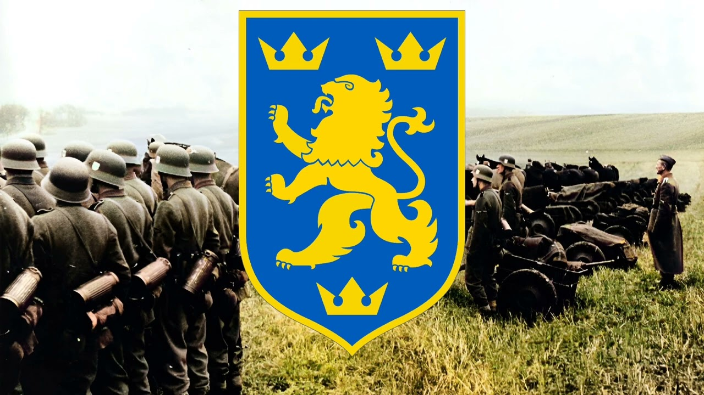
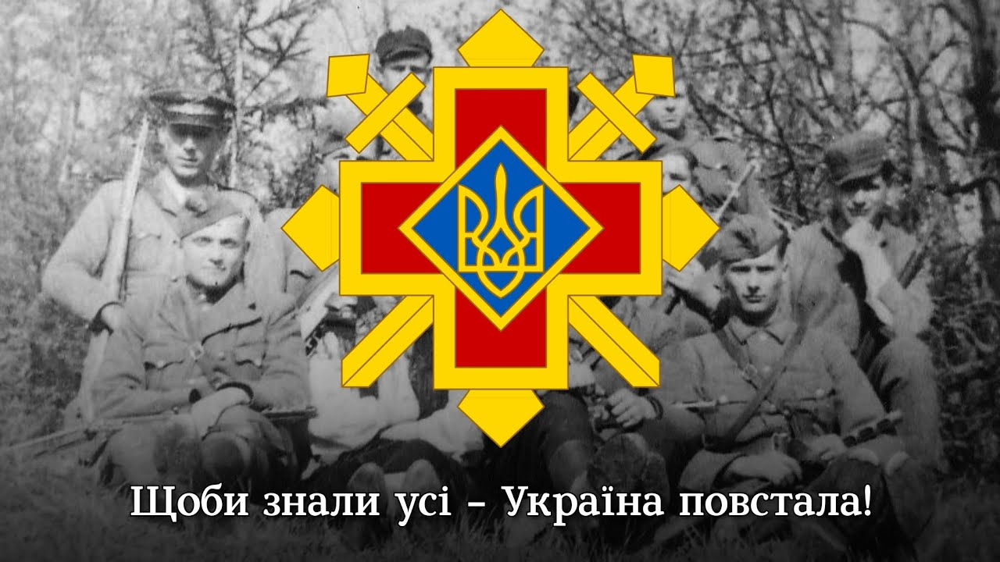
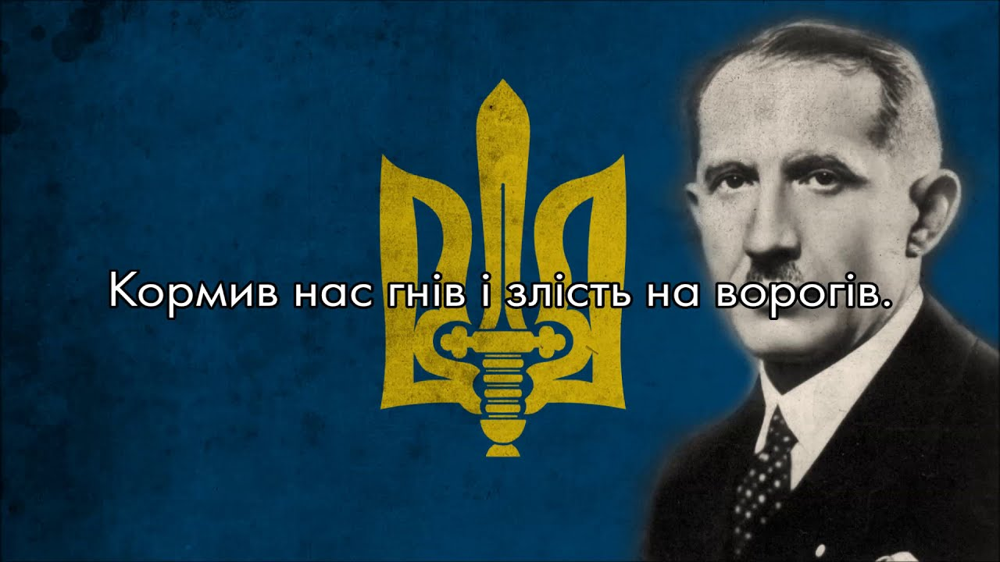
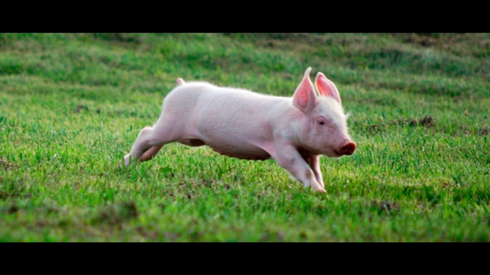
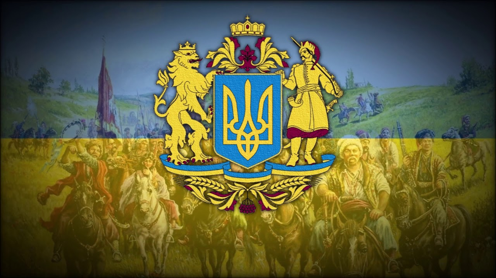
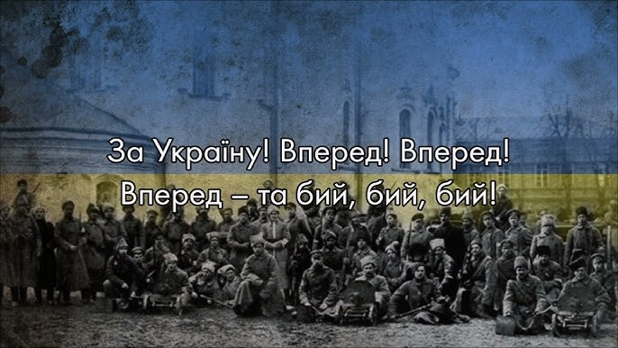

Збірник Українських національних пісень
Марширують добровольці
Йшли селом партизани
Зродились ми великої години
Весело по полю бігає кабанчик
Хай живе вільна Україна
Чорними хмарами
Марширують добровольці

Машерують добровольці
Як колись ішли стрільці
Сяють їм шоломи в сонці,
Грає усміх на лиці.
Приспів:
Хто живий, хто живий,
В ряд ставай, в ряд ставай,
Визволяти,
Здобувати рідний край!
Перед ними молодими
Розігнався в полі шлях.
А над ними небo синє,
Ясний усіх на устах.
Приспів.
Вже не буде ворог лютий
Розпинать на хрест батьків
І не влиє в серце вже отрути -
В чисті серця юнаків.
Приспів.
Йшли селом партизани

Приспів:
Йшли селом, йшли селом партизани,
По землі українській, невільній землі.
І у кожного зброя була за плечами, |
І у кожного смуток і біль на лиці. | (2)
Є! Напевно зайві слова,
Тут, або є, або нема на тих плечах голова,
Бо я не буду їхнім радити причалити "брат",
Різним героям наші прадіди кричали "віват!"
Не! Ми не однакові! Я не брат тобі!
Мене плекали в волі, а тебе ростили в вакуумі!
Зараз, як і тоді, діти молять Фатімі,
Ве написано у фатумі.
Як казав мій прадід: Хто із Богом, той не сам!
Дякуйте за волю всіх порогам і лісам!
Тільки не віддайте рідну землю диким псам!
Воля чи неволя, пам'ятай, ти - партизан!
Приспів.
Я ввібрав ненависть з молоком,
Мова має значення! Салам і шалом!
Псячий язик колись вже вигнав моїх предків із хати,
Морив їх голодом, війною, Сибіром, садив за грати,
Ми тепер однакові. Ворг в твоїй хаті і
Просто зроби так, щоб діти не росли у вакуумі!
Секрет весь у тобі, а не в чиємось задумі.
Так написано у фатумі.
Як казав мій прадід: Хто із Богом, той не сам!
Дякуйте за волю всіх порогам і лісам!
Тільки не віддайте рідну землю диким псам!
Воля чи неволя, пам'ятай, ти - партизан!
Приспів.
І у кожного зброя була за плечами,
І у кожного радість і сміх на лиці!
Зродились ми великої години

Зродились ми великої години,
З пожеж війни, із полум’я вогнів,
Плекав нас біль по втраті України,
Кормив нас гнів і злість на ворогів.
І ми йдемо у бою життєвому,
Тверді, міцні, незламні мов граніт,
Бо плач не дав свободи ще нікому,
А хто борець — той здобуває світ.
Не хочемо ні слави ні заплати.
Заплата нам — це радість в боротьбі!
Солодше нам у бою умирати,
Як жити в путах, мов німі раби.
Доволі нам руїни і незгоди,
Не сміє брат на брата йти у бій!
Під синьо-жовтим прапором свободи
З’єднаєм весь великий нарід свій.
Велику правду — для усіх єдину,
Наш гордий клич народові несе!
Вітчизні ти будь вірний до загину,
Нам Україна вище понад усе!
Веде нас в бій борців упавших слава.
Для нас закон найвищий — то наказ:
«Соборна Українська держава —
Вільна й міцна, від Сяну по Кавказ»
Весело по полю бігає кабанчик

У мене налитий самогон стаканчик
Біля хати бродить молодий кабанчик
Скоро буде свято, весела гулянка
Ой яка ж чудова гарна буде п'янка
Скоро буде свято, весела гулянка
Ой яка ж чудова гарна буде п'янка
Приспів:
Наливай куме горілки стаканчик
Бігає по полю весело кабанчик
Наливай куме горілки стаканчик
Бігає по полю весело кабанчик
Куме не тусуйтесь, та заходьте зліва
А я підкрадуся із за нашій сливи
Відганяйте куме хряка від дороги
Ой тримайте звіра, хапайте за ноги
Відганяйте куме хряка від дороги
Ой тримайте звіра, хапайте за ноги
Приспів.
Цілий день в городі кабана ловили
У мене і кума, вже немає сили
Годі вже ловити, забіяку хряка
Бо завиє скоро, як оті собаки
Годі вже ловити, забіяку хряка
Бо завиє скоро, як оті собаки
Приспів.
Хочеться поїсти, ковбаси свинини
Потекла у кума і у мене слина
Але як здуріла звірюка хвостата
Все перевернула і город і хату
Але як здуріла звірюка хвостата
Все перевернула і город і хату
Приспів.
Хай живе вільна Україна

Як у Цареграді, славних козаченьків,
Вражі бусурмани, вішали на гак.
Глянувши востаннє на цей світ біленький,
У смертну годину козак мовив так:
Приспів:
Хай живе, живе вільна Україна.
Хай живуть, живуть вічно козаки.
Хай цвіте, хай цвіте червона калина.
Нехай згинуть воріженьки на вічні віки.
Приспів.
Як вороги кляті нас на кіл сажали,
Як живцем палили, у смолі пекли,
Козаки у ката життя не благали
Про долю країни думи їх були.
Приспів.
Хто живе на світі і хто жити буде,
Хто шляхи козацькі буде ще топтать,
Щоб буяла воля, щоб раділи люди, –
Дай їм, Бог, востаннє ці слова сказать.
Чорними хмарами

Чорними хмарами вкрита руїна,
Вітер на згарищах грізно гуде.
Мов дика пустеля, лежить Україна,
Плаче дівчина і месника жде.
Приспів:
Раз-два, до бою, не шкодуй собою,
Меч піднеси і на відліт бий.
Бий до останньої кулі набою,
Бий за Вітчизну й поляж головою,
За Україну вперед, вперед вперед!
Бий, бий, бий!
Грізно реве невблаганна стихія,
Вже нас до ями на смерть привели.
Тільки не знали напасники злії,
Як умираючи б'ються орли.
Приспів.
За нас пройшли через муки й тортури,
Як приклад великий, як жертви для нас
Великі звитяжці Мазепа й Петлюра,
Петро Дорошенко, Богдан і Тарас.
(або: Павло Полуботок, Степан і Тарас.)
Приспів.
За матерів і за глум, за руїни
,
За немовлят і румовища хат,
Вставай, Україно, могутня і сильна,
Від синього Дону до сивих Карпат!
Приспів.
Сайт підготував Козаков Володимир. Бажаючі доповнити сайт звертайтесь на gmail kizahov0lore19@gmail.com